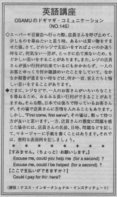

ちょっとお願いします。
スーパーや百貨店へ行った時、店員さんを呼び止めて、少しものを尋ねたいと思う時、あるいは、買い物をすませた後、さて、どのレジで支払いをすればよいのか迷う時など、何気ない一言が、とっさに出て来ないため、もどかしい思いをすることがあります。 また、レジの店員さんが長い行列が出来ているにもかかわらず、一人のお客とゆっくり何か雑談をしていて、なかなか順番が進まない時など、何か一言、言えたらと悔しい思いをすることがあります。
たまに、レジなどで、一人のお客さんがいろいろなことを尋ねるため、みるみる長い列ができることがあります。そんな際、日本では後ろで待っているお客さんが、その場で店員さんに苦情を入れることもあります。しかし、 First come, first serve、その場は、黙って待つ方が良いと思います。一方、店員さんの態度に問題を感じた場合には、店員さんの名前、日時、問題などを記して、マネージャーに手紙を書くことはあります。それでは便利な表現例を記しましょう。
すみません。ちょっとお願いします。
Excuse me, could you help me (for a second)?
Excuse me, could I be helped (for a second)?
ここで支払いができますか。
Could I pay for this here?

| © 1995-2013 NACOS International Institute. All Rights Reserved. |